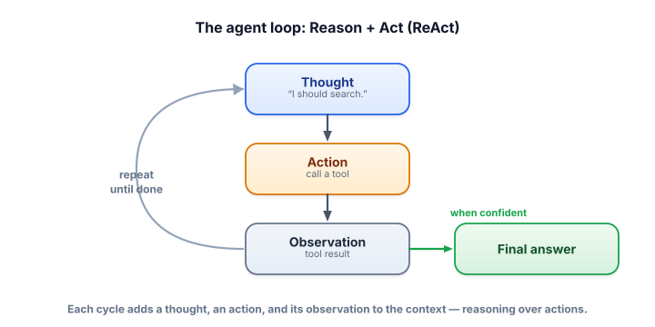

The agent loop (ReAct)
One tool call answers one question. Real tasks need several steps where each depends on the last. The agent loop — reason, act, observe, repeat — is the engine that turns a tool-using model into something that can actually solve problems.
Why a loop, and why interleave reasoning with acting
Consider “What’s the population of France times two?” The model can’t answer in one shot: it needs to look up the population (it doesn’t reliably know current figures), then do the multiplication (it’s bad at exact math). The steps are sequential and the second depends on the first’s result. That’s the loop: the model takes one action, sees the result, and only then decides the next action. The popular framing is ReAct — Reasoning + Acting — where the model alternates between a thought (what should I do next and why) and an action (a tool call), reading each observation before continuing.

The agent loop repeatedly asks the model what to do next. Each iteration is a step: the model either emits a tool call (an action), whose result (the observation) is appended to the conversation, or it emits a final answer, which ends the loop. ReAct is the pattern of interleaving explicit reasoning (“thoughts”) with these actions. A stopping condition ends the loop — either the model finishes, or a guard (like a maximum step count) trips.
The agent loop is like finding a lost cat in your neighbourhood: you think 'she likes the park', you go look, you see nothing, you think 'maybe the neighbour's shed', you go look again. Each thing you see decides where you go next. The analogy breaks because you would give up after an hour and go home; an agent has no sense of time or money and will search forever unless your code sets a limit.
Watch an agent think
Step through a real multi-step trace. Notice how each observation feeds the next thought — the model isn’t guessing, it’s building on what it learned.
ReAct trace
Goal: “What is the population of France, doubled?” — the agent has web_search and calculator.
The whole loop in ~15 lines, with a max_steps guard so it can never run away (Lesson 4.8 lives here).
import ollama
TOOLS = {"calculator": calculator, "web_search": web_search} # your real functions
def run_agent(goal, tool_schemas, max_steps=6):
messages = [
{"role": "system", "content": "Use tools to solve the task. Think, then act. Answer when sure."},
{"role": "user", "content": goal},
]
for step in range(max_steps): # the GUARD: bounded loop
msg = ollama.chat(model="qwen2.5:7b", messages=messages, tools=tool_schemas)["message"]
messages.append(msg)
calls = msg.get("tool_calls")
if not calls: # no tool → it's the final answer
return msg["content"]
for call in calls: # run each requested tool
name = call["function"]["name"]
result = TOOLS[name](**call["function"]["arguments"])
messages.append({"role": "tool", "content": str(result)}) # observation back in
return "Stopped: hit max steps." # never loop forever
print(run_agent("What is the population of France, doubled?", tool_schemas))That’s a complete agent. The loop is short on purpose — the intelligence is in the model’s choices and your tools, not in clever loop code. Everything else in this track makes this loop smarter (planning, memory) and safer (guards).
Assumptions: an internal ops agent runs 500,000 times a day. Traces show 1% of runs get stuck calling a failing tool with the same arguments. Each step starts from 4,000 tokens of context and adds 600 tokens; each step writes 150 output tokens. Prices: claude-sonnet-5-5, $2/M in, $10/M out (Claude models overview).
Input tokens for N steps = 4,000N + 600 x N(N-1)/2, because the history is resent every step.
- Cap of 30 steps. Input = 120,000 + 600 x 435 = 381,000 tokens = $0.762. Output = 4,500 tokens = $0.045. About $0.81 per stuck run.
- Cap of 6 steps. Input = 24,000 + 600 x 15 = 33,000 = $0.066. Output = 900 = $0.009. About $0.075.
- Repeat detection (stop on the third identical call, at step 3). Input = 12,000 + 600 x 3 = 13,800 = $0.028. Output = 450 = $0.0045. About $0.032.
- Daily bill for the 5,000 stuck runs: 30-step cap $4,035; 6-step cap $375; repeat detection $161.
Notice the quadratic term: doubling the cap more than doubles the cost of a stuck run, because each extra step resends everything before it. That is why the step budget, a token budget and repeated-call detection all belong in the loop, and why the fix for the 1% is to repair the tool, found by reading the trace.
- The agent loop repeats: the model picks an action, observes the result, and decides again — until it answers.
- ReAct interleaves reasoning (thoughts) with acting (tool calls), so each step builds on the last.
- Each step appends to the context — the model reasons over a growing trace of its own actions.
- The loop ends when the model emits a final answer or a guard (like max-steps) trips.
- The loop is simple; the power is in good tools, clear prompts, and bounds.
Why does an agent loop almost always include a maximum step count?
In a ReAct loop, where do the facts in the final answer come from?
Your agent's trace shows it calling search(query='Q3 revenue') five times in a row with identical arguments, getting the same empty result each time. What is the best guard to add first?
1. Trace the steps an agent with web_search and calculator would take for “How many days until the next leap year, times 3?”
2. Why does ReAct (reason then act, repeatedly) tend to beat asking the model to output a full plan and execute it blindly?
3. Your agent sometimes ends with “Stopped: hit max steps.” List two distinct causes and how you’d investigate.
▸ Show solutions & reasoning
1. Thought: I need the next leap year and today’s date → Action: web_search or compute next leap year → Observation: e.g., 2028 → Thought: days until 2028-02-29 → Action: calculator (date difference) → Observation: N days → Thought: multiply by 3 → Action: calculator(N×3) → Observation: 3N → Final answer. Each observation determines the next action — that dependency is why a loop is needed.
2. Because the real world surprises the plan. A blind upfront plan can’t adapt when a search returns something unexpected or a tool errors. ReAct lets the model see each result before choosing the next step, so it can correct course, retry, or change approach. Plans are still useful (Lesson 4.4) — but they work best when re-checked against observations, not executed sight-unseen.
3. Cause (a): the task genuinely needs more steps than the cap — raise the limit or decompose it. Cause (b): the agent is stuck in a loop — repeating the same failing action (a broken tool, bad arguments, or an observation it can’t use). Investigate by logging the full trace (every thought/action/observation): if you see repetition, fix the tool or its result formatting; if you see steady progress that just ran long, the cap was too low.
The single most useful habit for building agents is to log and read the full trace — every thought, every tool call with its arguments, every observation. Almost all agent debugging is reading traces: you’ll see the model pick the wrong tool (fix the description), pass a malformed argument (validate/normalize), misread an observation (format tool results more clearly — labeled, trimmed, structured), or loop because a tool keeps failing silently (surface the error as an observation). The model’s behavior is a direct function of what it sees in the context, and the trace is what it sees.
This also reframes “observations.” How you format a tool’s result matters as much as the result itself: a wall of raw JSON or a 10,000-token API dump will confuse the model and blow the context budget, while a concise, labeled summary (“search results: 1) … 2) …”) keeps it on track. Trim, label, and structure observations before feeding them back. And because the trace grows every step, long-running agents eventually strain the context window — which is exactly the problem memory (Lesson 4.5) solves. For now, internalize the loop and the trace: master those two and you understand 80% of agent engineering.
labs/04_agent_tools.pyFree and offline once set up: Ollama with qwen2.5:7b, plus the packages in labs/README.md. From the course folder:
python labs/04_agent_tools.pyWhat to look for: The lab prints a step number on every model turn. The real model finished every scenario in 2 steps on our run, so the guards never fired there; the 'scripted model' section uses a fake model stuck on one tool call to show the repeat guard blocking steps 2-4 and the step budget ending the run. Lower max_steps to 1 in a real scenario and watch a two-step task stop early.
Small samples: these labs use 5 to 20 cases so they run in minutes on a laptop. Where they report a rate, they print n and a 95% Wilson interval. Read them as a demonstration of the mechanism, not as a measured rate for your system; for that you need hundreds of cases and several seeds.
▸ Recorded output (our run, 2026-11-03, qwen2.5:7b on a laptop GPU)
Second scripted model: it calls issue_refund for Rs 1500 (over the Rs 1000 auto-approve line), then answers.
step 1: issue_refund({'order_id': 'ORD-55120', 'amount_rs': 1500}) -> {'status': 'pending_human_approval', 'order_id': 'ORD-55120', 'amount_rs': 1500}
step 2: FINAL -> Your refund request has been sent for approval.
Look: the code returned pending_human_approval and the audit log records NEEDS_HUMAN: money did not move.
(The claim checker above is a crude regex: it can flag a polite 'shall I proceed?' as a promise. Read the
flagged lines yourself; in production you compare structured tool results, not text patterns.)
Audit log (what actually moved money)
('BLOCKED', 'ORD-55120', 25000)
('NEEDS_HUMAN', 'ORD-55120', 1500)
unbacked claims detected: 1 ignored refund requests: 1
Look: the Rs 25000 request was blocked by code, whatever the model was persuaded to try.
And check every FINAL line against the tool results: a fluent agent can promise an action it never
took, or add numbers no tool returned (e.g. a refund timeline). Verify claims against the audit log.
Prompts guide the model; only code enforces policy.Your numbers will differ a little run to run. Full log: labs/outputs. Source: labs/04_agent_tools.py.
Warm-up. Using the lesson's formula (input = start x N + growth x N(N-1)/2), compute input tokens for a 10-step run starting at 3,000 tokens and growing 500 per step.
▸ Solution
3,000 x 10 + 500 x (10 x 9 / 2) = 30,000 + 22,500 = 52,500 input tokens. Almost half the total comes from resending history, and that share grows with N.
Transfer. Your agent's observations are raw 8,000-token JSON API responses, and it often misreads them. Redesign the observation step.
▸ Solution
Format the result in the tool wrapper before it enters the context: keep only the fields the task needs, label them, cap list length (say the top 5 rows with a 'showing 5 of 240' note), and return errors as one clear line. This cuts tokens per step (and the quadratic resend cost) and makes the model's next decision easier. Keep the full raw response in your logs, not in the prompt, so you can still debug.
Stretch. Write a loop guard that stops on any of: 8 steps, 60,000 total tokens, 90 seconds wall clock, or the same (tool, arguments) pair appearing 3 times. Return a distinct stop reason for each.
▸ Solution
import time, json
def run(goal, max_steps=8, max_tokens=60_000, max_secs=90):
t0, used, seen = time.time(), 0, {}
msgs = [{"role":"user","content":goal}]
for step in range(max_steps):
if time.time() - t0 > max_secs: return "stop: time"
r = chat(msgs, tools) # your model call
used += r.prompt_tokens + r.output_tokens
if used > max_tokens: return "stop: tokens"
msgs.append(r.message)
if not r.tool_calls: return r.message["content"]
for c in r.tool_calls:
key = (c.name, json.dumps(c.args, sort_keys=True))
seen[key] = seen.get(key, 0) + 1
if seen[key] >= 3: return f"stop: repeated {c.name}"
msgs.append(tool_msg(c, run_tool(c)))
return "stop: steps"Junior What is ReAct?
▸ Model answer
ReAct is a pattern from Yao et al. (2022) where the model alternates between reasoning and acting: it writes a thought about what to do next, takes an action such as a tool call, reads the observation, and repeats until it can answer. The paper showed that interleaving the two reduces hallucination compared with reasoning alone, because the facts come from tool observations. In practice, most agents today use native tool calling in a loop, which is the same idea: decide, act, observe, decide again, with a stopping condition.
Mid Your agent's average cost per run doubled after a release, but success rate is unchanged. How do you investigate?
▸ Model answer
Start from the traces. Compare the before and after distributions of steps per run, tokens per step and tokens per observation, not just averages, because a small set of runaway runs can double the mean. Common causes: a tool now returns a much bigger payload, a prompt change made the model take extra verification steps, a tool started failing so the model retries, or history is no longer trimmed. Then fix the specific cause: trim observations, restore the summary step, fix the tool, and add a per-run token budget and an alert on cost per run so this is caught on day one next time.
Senior How would you design stopping conditions for a long-running agent, say one that works for 2 hours on a coding task?
▸ Model answer
Several layers. Hard limits in code: max steps, max tokens or dollars, and wall-clock time, each with its own stop reason. Progress checks: detect repeated tool calls and no-progress windows, for example no new file changes and no new test results in 10 steps, then either force a replan or stop. Checkpoints: persist state so a stop is resumable rather than lost work. A clear done condition the agent can verify, like 'tests pass', instead of 'the model feels done'. And human escalation: when it stops on a budget, it produces a summary of what it tried so a person can decide.
Looping reactively works, but for complex goals it helps to think before acting — to lay out a plan and then execute it. Next: planning & decomposition.